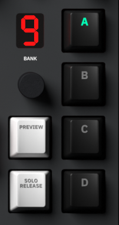

Programmable Mute Controller
The programmable mute controller on the master section offers powerful and intuitive control over channel muting. With this feature, you can store mute groups for all 16 channels and switch between them effortlessly, enabling smooth transitions and dynamic workflow during live performances or in the studio.
Key Features:
- Store Mute Groups: Create and save customized mute configurations for any combination of the 16 channels.
- Easy Recall: Quickly toggle between stored mute groups with the flick of a button, enabling seamless changes during mixing or performing.
- Flexible Workflow: Perfect for setting up complex routing scenarios or managing channel muting for different sections of a mix or live performance.
This programmable mute controller ensures that you have fast, reliable access to tailored mute settings, streamlining your workflow and adding versatility to your creative process.

Detailed Description
The Programmable Mute Controller in the master section is a versatile tool designed to manage channel muting efficiently. It allows you to store and recall mute group presets across all 16 channels, offering a high degree of control for both live and studio environments. Here’s how it works:
Banks and Groups
- The controller features 9 banks (numbered 1–9), each capable of storing 4 mute groups labeled A, B, C, and D.
- This provides a total of 36 customizable mute groups for flexible configurations.
Loading a Mute Group
To load a previously stored mute group:
- Select the desired bank (1–9) using the rotary knob under the LCD.
- Press one of the buttons A, B, C, or D to activate the corresponding mute group.
Storing a Mute Group
To store the current mute settings into a mute group:
- Select the desired bank (1–9).
- Hold down one of the A, B, C, or D buttons for 3 seconds.
- When all ON buttons flash, the operation is successfully completed.
Momentary Mode Storage
- Momentary Mode settings for each channel (On/Off) are also saved within the mute groups, ensuring complete recall of your custom muting configurations.
Preview Function
The Preview Button allows you to preview which channels will be muted in a selected group:
- Hold down the Preview Button.
- Simultaneously press A, B, C, or D to preview the muted channels in the corresponding group.
- This function gives you the ability to check your configurations before committing to a mute group in real-time.
Solo Release
The Solo Release Button removes all active solos across all channels in one step, simplifying control during transitions or when clearing solo selections.
Summary
The programmable mute controller is a highly flexible and user-friendly feature, offering:
- 9 banks and 4 groups per bank for extensive mute group storage.
- Intuitive loading and storing of mute groups with visual feedback.
- The ability to store channel momentary mode settings.
- A preview function to check mute configurations before activating them.
- A solo release button for quick clearing of active solos.
This functionality ensures effortless management of muting configurations, making it ideal for dynamic performances and complex mixing setups.